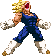

activate Sanity Mode (LV2)
Activating Sanity Mode has Vegeta blocking out Babidi's influences,
making him calmer and more focussed. This changes a few things, gameplay-wise.
- At activation an empty Sanity Bar and a red kanji are added to the screen.
- The Sanity power amount is represented by the Sanity Bar and it's level by the color of the kanji: red = Lv0, orange = Lv1, yellow = Lv2, green = Lv3.
- Vegeta loses Power Charge, it's replaced by Sanity Charge.
- Using Bakuhatsuha attacks gradually fills the Sanity Bar.
- In Sanity Mode, Supers can be performed as usual but cost Sanity Bar instead.
- Performing the same Super move twice in a row will cancel Sanity Mode.
- In Sanity Mode, Vegeta gains access to the Aura Burst (detailed below).
- Saiyan Pride Beatdown costs Lv2 instead of Lv3 and cancels the mode.
- Vegeta will perform a unique and powerful Finisher at the end of his Saiyan Pride Beatdown (replacing the Atomic Blast). Which one he performs depends if the Sanity Bar is at Lv1, Lv2 or lv3 when you activate the Saiyan Pride Beatdown.
- At activation an empty Sanity Bar and a red kanji are added to the screen.
- The Sanity power amount is represented by the Sanity Bar and it's level by the color of the kanji: red = Lv0, orange = Lv1, yellow = Lv2, green = Lv3.
- Vegeta loses Power Charge, it's replaced by Sanity Charge.
- Using Bakuhatsuha attacks gradually fills the Sanity Bar.
- In Sanity Mode, Supers can be performed as usual but cost Sanity Bar instead.
- Performing the same Super move twice in a row will cancel Sanity Mode.
- In Sanity Mode, Vegeta gains access to the Aura Burst (detailed below).
- Saiyan Pride Beatdown costs Lv2 instead of Lv3 and cancels the mode.
- Vegeta will perform a unique and powerful Finisher at the end of his Saiyan Pride Beatdown (replacing the Atomic Blast). Which one he performs depends if the Sanity Bar is at Lv1, Lv2 or lv3 when you activate the Saiyan Pride Beatdown.

Aura Burst
During this unblockable move, Vegeta leaps into the air and unleashes all his current Sanity Bar power from his body in a large sphere, damaging the enemy.
The more your Sanity Bar is filled on the moment of activation, the more hits and damage it will deal to your opponent. Beware that you can be knocked out of the start-up animation relatively easily.
As stated before, activating this move drains all of your Sanity Bar, cancels the mode and leaves you dizzy for a short while afterwards.
You decide if it's worth the risk!